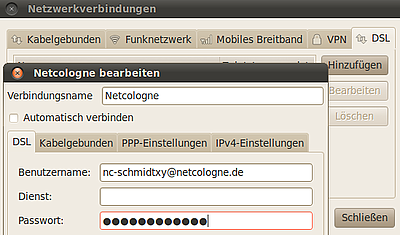
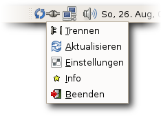

DSL ohne Router
Achtung!
Diese Anleitung ist nur für Benutzer gedacht, die direkt eine PPPoE-Verbindung aufbauen wollen und keinen PPPoE-Gateway verwenden! Ein PPPoE-Gateway kann ein (WLAN)-Router, USB DSL-Modem, TV-Kabelanschluss mit Kabelmodem oder etwas ähnliches sein. Ist der Rechner an einem PPPoE-Gateway angeschlossen, ergibt es keinen Sinn, PPPoE (PPP over Ethernet) zu nutzen.
Archivierte Anleitung
Dieser Artikel wurde archiviert, da er - oder Teile daraus - nur noch unter einer älteren Ubuntu-Version nutzbar ist. Diese Anleitung wird vom Wiki-Team weder auf Richtigkeit überprüft noch anderweitig gepflegt. Zusätzlich wurde der Artikel für weitere Änderungen gesperrt.
Zum Verständnis dieses Artikels sind folgende Seiten hilfreich:
Ein PPPoE-Zugang wird oft auch einfach Breitband- oder Internetverbindung genannt. Diese Anleitung gilt für alle PPPoE-Zugänge, unabhängig davon, ob der Zugang über DSL, WLAN oder eine sonstige Verbindung hergestellt wird. Am Ende des Artikels wird die Alternative PPTP behandelt. Damit ein Internetzugang per DSL eingerichtet werden kann, muss natürlich die verwendete Hardware erkannt worden sein. Dies sollte automatisch geschehen. Falls man einen Router besitzt, der die Zugangsdaten im Gerät selbst speichert (z. B. eine FRITZ!Box), braucht man die folgende Prozedur nicht durchführen. Bei einem WLAN-Gerät muss natürlich die Verbindung bestehen. Ausführliche Informationen zur Einrichtung von kabellosen Netzwerken gibt es unter WLAN.
Empfehlung: Um den Unterschied zwischen einem DSL-Router und einem DSL-Modem zu verstehen sind grundlegende Netzwerkkenntnisse und das Verständnis des DHCP-Protokolls von Vorteil. Ein Router vergibt über DHCP eine IP-Adresse (sowie den Gateway usw.) an die Netzwerkkarte des Rechners und verbindet ihn "quasi automatisch" mit dem Internet. Das DSL-Modem ist nicht automatisch in der Lage eine IP-Adresse zu vergeben. Ist der Rechner an ein DSL-Modem direkt angeschlossen, dann muss der PC selbst den PPPoE-Zugang bzw. die Internetverbindung aufbauen.
PPPoE-Zugang grafisch einrichten¶
Wenn man den PPPoE-Zugang grafisch einrichten möchte, empfiehlt sich als Lektüre der NetworkManager. Das Layout hat sich unter Lucid Lynx verändert, aber viele der Masken sind gleich geblieben oder ähneln sich sehr stark.
Ubuntu Lucid Lynx 10.04¶
 Die folgende Anleitung gilt für Gnome. Um hier DSL einzurichten klickt man auf "System -> Einstellungen -> Netzwerkverbindungen". Dort gibt es (neben "VPN" und anderen) einen Reiter "DSL". Hier kann man mit "Hinzufügen" den DSL-Anschluss anlegen. Als Verbindungsnamen kann man den Namen des Providers verwenden (Beispiel: "Netcologne"). "Benutzername" und "Passwort" müssen ausgefüllt werden. "Dienst" kann bei einigen Providern leer bleiben.
Im Screenshot ist ein Beispiel für den Provider Netcologne zu sehen. Bis auf Benutzername und Passwort wurden alle Default-Einstellungen benutzt. Um sich mit dem Internet zu verbinden, klickt man auf das Netzwerksymbol (links neben Datum und Uhrzeit) in der Menüleiste und klickt auf den Verbindungsnamen (Beispiel: "Netcologne"), den man vorher angelegt hat.
Wichtig: Die Netzwerkkarte (Bsp: eth0) muss aktiv sein und die Verbindung zum DSL-Modem muss bestehen. Deshalb bietet es sich an, das DSL-Modem vor dem Start von Ubuntu anzuschalten.
Der NetworkManager übernimmt vollständig die Netzwerkkonfiguration, da der NetworkManager nun alle Spielarten des Netzwerkzuganges wie DSL oder auch UMTS beherscht.
PPPoE-Verbindung mit pppoeconf¶
Soll direkt über ein DSL-Modem mit dem PC eine Internetverbindung hergestellt werden, muss die Verbindung mit pppoeconf eingerichtet werden. Dazu muss in einem Terminal [2] das Programm mit
sudo pppoeconf
gestartet werden. Dadurch werden alle im PC vorhandenen Ethernetkarten automatisch auf PPPoE-Fähigkeit geprüft. Als Parameter kann aber auch die richtige Netzwerkkarte direkt angegeben werden (z.B. eth0), was die Suche des Programms nach der richtigen Karte abkürzt.
Anschließend wird automatisch nach einer Netzwerkkarte gesucht, die normalerweise auch gefunden werden sollte. Ansonsten hilft eine Aktualisierung des Paketes pppoeconf - siehe Problembehebung.
Dies mit "Ja" bestätigen. Dann wird nach einem PPPoE-Access-Concentrator, also dem DSL-Modem, gesucht. Ebenfalls mit "Ja" bestätigen. Eventuell kommt jetzt der Hinweis, dass die Konfigurationsdatei geändert wird, also alte Einstellungen den DSL-Zugang betreffend überschrieben werden. Auch der nächste Schritt sollte im Normalfall einfach mit "Ja" bestätigt werden.
Anschließend muss der Benutzername eingegeben werden (wobei die Vorgabe "username" gelöscht werden muss) und danach das Passwort.
Hinweis:
Es gibt Internet-Anbieter, die ihren Kunden nicht den korrekten Benutzernamen in ihren Briefen mitteilen, beispielsweise T-DSL Business. Laut Mitteilung des Anbieters ist der Loginname z.B. "012450025364", korrekt ist aber "t-online-com/012450025364@t-online-com.de". Bei T-Online setzt sich der Benutzername aus Anschlusskennung, T-Online-Nummer und Mitbenutzernummer zusammen: xxxxxxxxxxxxyyyyyyyyyyyy#0001@t-online.de (x = T-Online-Anschlusskennung 12-stellig; y = T-Online-Nummer meist 12-stellig; Mitbenutzer meist #0001). Das Zeichen # zwischen T-Online-Nummer und Mitbenutzernummer wird nur benötigt, falls die T-Online-Nummer weniger als 12 Stellen hat.
Bei Vodafone ist das Verfahren ähnlich. Hier ist der für den Benutzernamen die [Nummer]@vodafone.de (z.B. ar0123456@vodafone.de) einzutragen. Das Kennwort kann einfach aus dem Brief abgeschrieben werden.
Danach wird in die Konfigurationsdatei die IP-Adresse eines DNS-Servers geschrieben. Auch dies sollte automatisch geschehen und mit "Ja" bestätigt werden. Der nächste Schritt sollte (bevor man etwas falsch macht) auch mit "Ja" abgeschlossen werden.
Die Konfiguration ist im Großen und Ganzen nun abgeschlossen. Je nach Tarif bzw. Geschmack kann man nun auswählen, ob automatisch "beim Start des Systems" eine Internetverbindung hergestellt werden soll (praktisch bei einer Flatrate).
Beim nachfolgenden Schritt kann man entscheiden, ob nach Abschluss des Konfigurationsprogramms eine Internetverbindung hergestellt werden soll. Wählt man hier "Ja", sollte man sofort z.B. mit Firefox auf das Internet zugreifen können.
Wählt man hier "Nein", so kann man mit dem Befehl [2]:
pon dsl-provider
online gehen und mit dem Befehl:
poff
die Verbindung wieder trennen.
Problembehebung¶
Webseiten können nicht geöffnet werden¶
Bei T-Online - und eventuell auch anderen Anbietern - kann es passieren, dass nach der Konfiguration zwar Dinge wie ein Systemupdate funktionieren, der Browser aber keine Webseiten öffnen kann. Das Problem tritt auf, wenn die Übertragung der Adresse des DNS-Servers (auch "Nameserver") ausgeblieben ist. Das System kann dann keine DNS-Adressen wie beispielsweise www.ubuntu.com aufrufen, wohl aber IP-Adressen.
Um heraus zu finden, ob dem System überhaupt DNS-Server bekannt sind, öffnet man mit einem Texteditor[7] der über Root-Rechte verfügt [8] die Systemdatei /etc/resolv.conf. Sollte diese Datei leer sein, können keine DNS-Adressen aufgelöst werden. In dem Fall ist es nötig, DNS-Server von Hand einzutragen. Für die Telekom Deutschland wäre das beispielsweise:
nameserver 217.0.43.33 nameserver 217.0.43.17
Das Format ist also pro Zeile nameserver[Leerstelle][IP-Adresse]. Hat man einen anderen Provider, gilt es, dessen DNS-Server-Adresse heraus zu finden. Alternativ könnte beispielsweise auch auf den "Anti-Zensur-DNS-Server"  des FoeBuD ausgewichen werden.
des FoeBuD ausgewichen werden.
Fehlende Gruppenzugehörigkeit¶
Werden die Befehle pon und poff mit folgendem Fehler:
Error: only members of the 'dip' group can use this command.
abgebrochen, dann muss ein sudo [8] vorangestellt werden:
sudo pon dsl-provider sudo poff
Alternativ kann der jeweilige Benutzer auch Mitglied der Gruppe dip werden:
sudo adduser <benutzername> dip
Diese Änderung wird jedoch erst nach einer Neuanmeldung wirksam.
Netzwerkkarte nicht auffindbar¶
Falls beim Suchen der Netzwerkkarte die Fehlermeldung "Kein Access-Concentrator gefunden" angezeigt wird, muss die aktuelle Version von pppoeconf zum Beispiel im Debian Package Center  heruntergeladen werden. Danach installiert man das Paket [1] manuell.
heruntergeladen werden. Danach installiert man das Paket [1] manuell.
Hinweis!
Fremdpakete können das System gefährden.
Hinweise¶
Kopiert man den Inhalt der Datei /etc/ppp/peers/provider/dsl-provider in die Datei /etc/ppp/peers/provider/provider (nach vorangegangener Sicherung):
sudo cp /etc/ppp/peers/provider /etc/ppp/peers/provider.old sudo cp /etc/ppp/peers/dsl-provider /etc/ppp/peers/provider
so genügt auch ein
pon
um die Verbindung aufzubauen.
Grafische Einwahl¶
Starter¶
Wer sich nicht gleich beim Start verbinden möchte, kann sich für die zwei Befehle pon und poff ein simples Startskript fürs Panel anlegen.
PPP Tray Icon¶
Hinweis!
Fremdpakete können das System gefährden.

PPP Tray Icon ist ein kleines Programm für die komfortable Einwahl in das Internet über PPPoE. Einmal gestartet zeigt es ein Icon im Benachrichtigungsfeld des GNOME Panels an. Über dieses kann man die DSL-Verbindung starten, unterschiedliche Anbieter zur Einwahl auswählen und die Verbindung auch wieder trennen. Das Programm lässt sich jedoch nicht aus den Paketquellen installieren. Soll das Programm beim Starten von GNOME automatisch ausgeführt werden, so muss man das Kommando pptray zu den automatisch startenden Programmen hinzufügen [6].
Befehle beim Start/Ende der Verbindung ausführen¶
Es ist möglich, beim Aufbau oder Trennen der Verbindung Befehle automatisch ausführen zu lassen. Dazu müssen die Dateien /etc/ppp/ip-up.local bzw. /etc/ppp/ip-down.local (mit Root-Rechten [8]) angelegt werden. Als Beispiel soll das Datum und die Uhrzeit des Verbindungsaufbaus gespeichert werden.
Als Inhalt fügt man also die Zeilen
#!/bin/bash # Logge den Verbindungsaufbau DATE=`date +%Y%m%d` TIME=`date +%k%M` echo "DSL-Verbindung am $DATE um $TIME hergestellt." >> /var/log/pppoestarts
in die /etc/ppp/ip-up.local ein. Danach muss das Skript noch ausführbar gemacht werden:
chmod 744 /etc/ppp/ip-up.local
Nach dem nächsten Verbindungsaufbau wird die Information in der neuen Log-Datei /var/log/pppoestarts abgelegt.
Dieses ist auch sehr praktisch für Server in Verbindung mit ddclient, um die IP (Dynamische DNS) zu aktualisieren. Dazu wird das Skript um Folgendes erweitert:
#!/bin/bash # Logge den Verbindungsaufbau DATE=`date +%Y%m%d` TIME=`date +%k%M` echo "DSL-Verbindung am $DATE um $TIME hergestellt." >> /var/log/pppoestarts # 20 Sekunden warten sleep 20 # ddclient aufrufen ddclient /etc/ddclient.conf > /var/log/ddclient.log
Diese Version sorgt dafür, dass bei jedem neuem Verbindungsaufbau die neue IP automatisch aktualisiert wird. Die Pause von 20 sec. soll verhindern, dass die Prozesse sich überschneiden und somit die Aktualisierung nicht vollzogen werden kann.
ADSL-Zugang mit PPTP einrichten¶
Wenn der Internet-Service-Provider das "PPTP-Protokoll" verwendet (wird von vielen Internet-Service-Providern in Österreich eingesetzt, z.B: Telekom Austria), ist am besten diese Anleitung zu befolgen.
Hinweis:
Telekom Austria-Kunden, die ein Alcatel Speedtouch 510, 546, 570 oder 585 Modem zur Verfügung gestellt bekommen haben, brauchen diese Anleitung nicht auszuführen. Sie haben die Möglichkeit, ihr Modem als Router zu konfigurieren (siehe dazu die unten stehenden Ausführungen).
ADSL mit Alcatel Speedtouch 510, 546, 570 oder 585 als Router¶
Für die Konfiguration des Modems als Router benutzt man besten diese Anleitung der Telekom Austria
Eine Einrichtung des DSL Zuganges mit PPTP ist dabei nicht notwendig!
Falls man keine CD zur Hand hat, auf der die benötigte .ini-Datei gespeichert ist, kann man sie von dieser Seite  herunterladen. Mit der Eingabe von http://10.0.0.138/ im Browser öffnet man das Web-Interface des Modems/Routers. Zunächst sollten die aktuellen Einstellungen des Modems/Routers gesichert werden. Dann wird die neue .ini-Datei eingespielt (siehe Anleitung der Telekom Austria).
herunterladen. Mit der Eingabe von http://10.0.0.138/ im Browser öffnet man das Web-Interface des Modems/Routers. Zunächst sollten die aktuellen Einstellungen des Modems/Routers gesichert werden. Dann wird die neue .ini-Datei eingespielt (siehe Anleitung der Telekom Austria).
Im neu angelegten Menüpunkt "shared internet" überschreibt man den eingetragenen Benutzernamen und das Passwort mit den eigenen Daten. Mit dem  -Klick auf den Button "Verbinden" stellt der Router die Verbindung zum Provider her (siehe Anleitung der Telekom Austria). Wichtig: Hier werden auch die IP-Adressen der vom Provider verwendeten Nameserver angezeigt. Falls noch nicht geschehen, müssen diese zusätzlich in die Datei /etc/resolv.conf eingefügt werden, sonst bleibt das Browserfenster leer.
-Klick auf den Button "Verbinden" stellt der Router die Verbindung zum Provider her (siehe Anleitung der Telekom Austria). Wichtig: Hier werden auch die IP-Adressen der vom Provider verwendeten Nameserver angezeigt. Falls noch nicht geschehen, müssen diese zusätzlich in die Datei /etc/resolv.conf eingefügt werden, sonst bleibt das Browserfenster leer.
- Erstellt mit Inyoka
-
 2004 – 2017 ubuntuusers.de • Einige Rechte vorbehalten
2004 – 2017 ubuntuusers.de • Einige Rechte vorbehalten
Lizenz • Kontakt • Datenschutz • Impressum • Serverstatus -
Serverhousing gespendet von